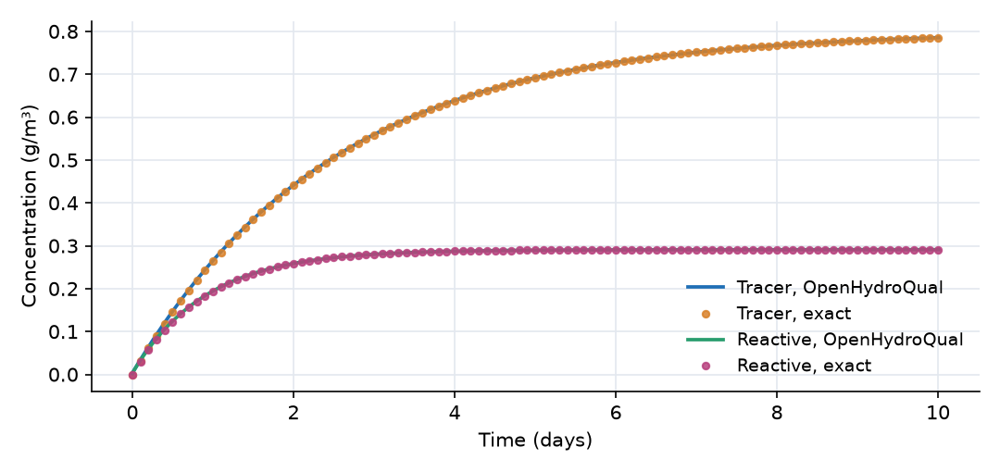

What this model represents
A continuously stirred tank reactor (CSTR): a vessel whose contents are mixed so well that the outflow has the same concentration as the tank. Mixed basins, aerated lagoons, small lakes and laboratory reactors are often idealized this way. Engineers measure how close a real vessel is to this ideal with a tracer test: the inflow concentration is switched from zero to a constant value, and the outflow concentration is recorded.
This model runs that test for two substances at once: a conservative Tracer, which only mixes, and a Reactive compound, which also decays. Both have exact solutions, so the example is also a verification of OpenHydroQual's transport and reaction calculations.
How it works
Water. The CSTR is a Reactor block with a constant external inflow Q = 0.4 m³/day. The Outflow link removes the same 0.4 m³/day, so the volume stays at V = 1 m³. The hydraulic residence time is τ = V/Q = 2.5 days.
Constituent mass balance. For each constituent, OpenHydroQual keeps the mass M (g) in every block as a state variable, and the concentration is C = M / V. Mass enters with the external inflow at the rate
inflow loading = (constant inflow concentration + time-variable inflow concentration) · Q
which here is 0.8 g/m³ × 0.4 m³/day = 0.32 g/day of each constituent. Mass leaves through the Outflow link by advection, at flow × concentration of the upstream block (C in the CSTR). The link also carries a dispersive term proportional to the constituents' diffusion coefficient and dispersivity, both zero here. Reactions add V · Σ ν·r, where ν is the stoichiometric coefficient and r the rate. The Decay reaction has ν = −1 for Reactive and 0 for Tracer, and rate r = k · C_Reactive. For constant V this gives
dC_Tracer/dt = (C_in − C_Tracer) / τ dC_Reactive/dt = (C_in − C_Reactive) / τ − k · C_Reactive
Exact solutions. Starting from C = 0:
C_Tracer(t) = C_in · (1 − e^(−t/τ)) C_Reactive(t) = C_ss · (1 − e^(−(1/τ + k)·t)), C_ss = C_in / (1 + k·τ)
With C_in = 0.8 g/m³, τ = 2.5 days and k = 0.7 per day: the tracer has a time constant of 2.5 days, and the reactive compound approaches C_ss = 0.8 / 2.75 = 0.291 g/m³ with a time constant of 1/1.1 = 0.91 days. The files exact_tracer.csv and exact_reactive.csv tabulate both solutions every 0.1 days and are overlaid on the plot.
Time stepping. The run uses a fixed time step of 0.01 days (max_timestep_increase_factor = 1), small compared with both time constants.
What to look for in the results
- Agreement with theory. Both computed curves lie on the exact solutions. The largest difference is about 0.003 g/m³ during the first day, roughly the change in concentration over one time step. It shrinks in proportion to the time step.
- The residence time. At t = τ = 2.5 days the tracer has reached 1 − e⁻¹ = 63% of the inflow concentration (0.51 g/m³), and at 10 days (4τ) it has reached 98%. In a real tracer test, this time constant is how the effective volume of a mixed vessel is measured.
- Reaction speeds up the approach to steady state. The reactive compound levels off much sooner than the tracer, because decay and washout act together with a combined rate of 1/τ + k = 1.1 per day.
- Steady-state removal. At steady state the reactor removes 1 − 1/(1 + k·τ) = 64% of the incoming Reactive. The dimensionless group k·τ (a Damköhler number, 1.75 here) controls the removal: a longer residence time or faster kinetics removes more.
- Mass balance. The tracer mass in the CSTR plus the Effluent_Tank grows at exactly 0.32 g/day, the inflow loading.
Assumptions and limitations
- The reactor is perfectly mixed: the outflow concentration equals the tank concentration at every instant. Real vessels have dead zones and short-circuiting; the Plug-Flow Reactor Tracer example shows the opposite extreme.
- Flow and volume are constant. The inflow concentration steps from 0 to 0.8 g/m³ at t = 0 and then stays constant.
- Decay is first order and independent of temperature (the Arrhenius factor of k is 1).
- The Decay reaction also acts in the Effluent_Tank, which is why its Reactive concentration is lower than the reactor's. That tank is only a sink and is not part of the comparison.
Model diagram
Hover a block or link to see its name and type. Arrows show the positive flow direction.
Components
Click a component to see every property set in the model file, with units and meaning.
Blocks 2
Storage compartments: each holds water (and dissolved or particulate mass) and has a state that evolves in time.
CSTRReactor · mass_transferA completely mixed reactor of 1 m³ fed with 0.4 m³/day of water carrying 0.8 g/m³ of both Tracer and Reactive. It starts with clean water. Hydraulic residence time V/Q = 2.5 days.
Reactor: Reactor
| Property | Value | Unit | Meaning |
|---|---|---|---|
| Reactive: Concentration | 0 | g/m3 | Computed as mass/(Storage+0.00001) |
| Reactive: Constant Inflow concentration | 0.8 | g/m3 | |
| Initial Storage | 1 | m3 | |
| Tracer: Concentration | 0 | g/m3 | Computed as mass/(Storage+0.00001) |
| Tracer: Constant Inflow concentration | 0.8 | g/m3 | |
| Bottom elevation | 0 | m | |
| Constant Inflow | 0.4 | m3/day |
Effluent_TankReactor · mass_transferA collection tank, initially empty, that receives the reactor outflow. It is there to give the outflow somewhere to go; its contents are not part of the test.
Reactor: Reactor
| Property | Value | Unit | Meaning |
|---|---|---|---|
| Reactive: Concentration | 0 | g/m3 | Computed as mass/(Storage+0.00001) |
| Initial Storage | 0 | m3 | |
| Tracer: Concentration | 0 | g/m3 | Computed as mass/(Storage+0.00001) |
| Bottom elevation | 0 | m | |
| Constant Inflow | 0 | m3/day |
Links 1
Connections that move water (and the mass it carries) between blocks.
OutflowFixed flow · mass_transferFixed flow of 0.4 m³/day from CSTR to Effluent_Tank, equal to the inflow, so the reactor volume stays at 1 m³.
Fixed flow: Fixed flow
| Property | Value | Unit | Meaning |
|---|---|---|---|
| Flow rate | 0.4 | m3/day |
Constituents 2
Substances or particles carried by the water.
TracerConstituentA conservative (non-reacting) dissolved substance, such as a dye or bromide.
Constituent: Chemical constituent
| Property | Value | Unit | Meaning |
|---|---|---|---|
| Concentration | 0 | g/m3 | Computed as mass/(Storage+0.00001) |
| Constant Inflow concentration | 0 | g/m3 | |
| Diffusion Coefficient | 0 | m2/s | |
| Dispersivity | 0 | m | |
| Stoichiometric Constant | 0 |
ReactiveConstituentA dissolved substance that decays by first-order kinetics.
Constituent: Chemical constituent
| Property | Value | Unit | Meaning |
|---|---|---|---|
| Concentration | 0 | g/m3 | Computed as mass/(Storage+0.00001) |
| Constant Inflow concentration | 0 | g/m3 | |
| Diffusion Coefficient | 0 | m2/s | |
| Dispersivity | 0 | m | |
| Stoichiometric Constant | 0 |
Reaction parameters 1
Named coefficients used in reaction rate expressions.
kReactionParameterFirst-order decay rate constant of Reactive, 0.7 per day.
ReactionParameter: Reaction Parameter
| Property | Value | Unit | Meaning |
|---|---|---|---|
| Arrhenius temperature correction factor | 1 | ||
| Value | 0.7 | ||
| Reference Temperature | 20 |
Reactions 1
Transformations among constituents, each with a stoichiometry and a rate expression.
DecayReactionFirst-order loss of Reactive, rate k·Reactive. It does not affect Tracer.
Reaction: Chemical reaction
(k*Reactive)| Constituent | Stoichiometric coefficient |
|---|---|
| Reactive | -1 |
Input files
exact_tracer.csv | |
exact_reactive.csv |
Simulation settings
| Start time | 0 |
| End time | 10 |
| Initial time step | 0.01 |
| Write interval (steps) | 10 |
Results
Produced by running the downloaded model unchanged.
